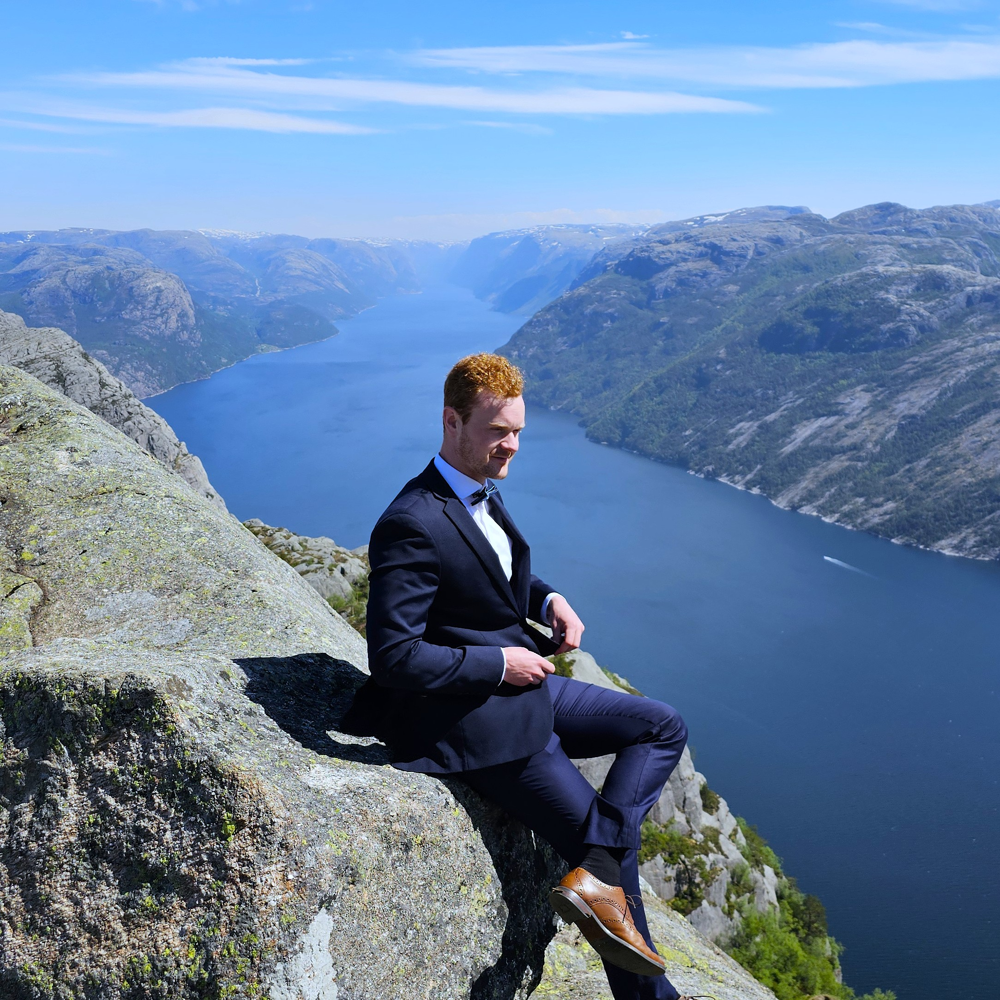
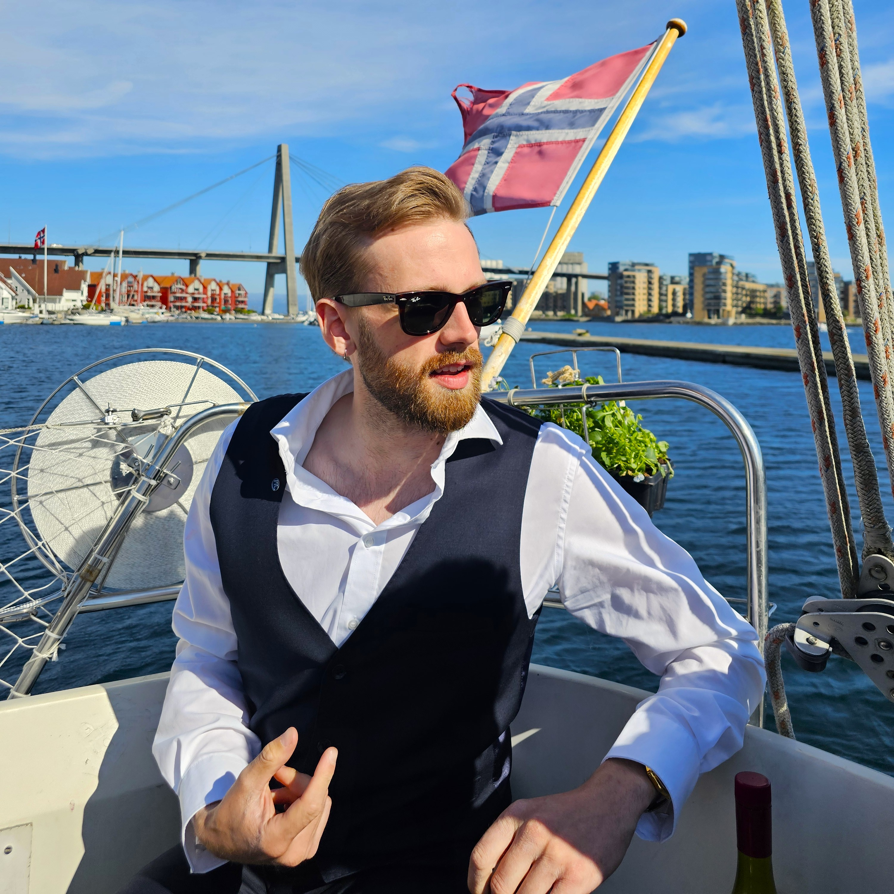
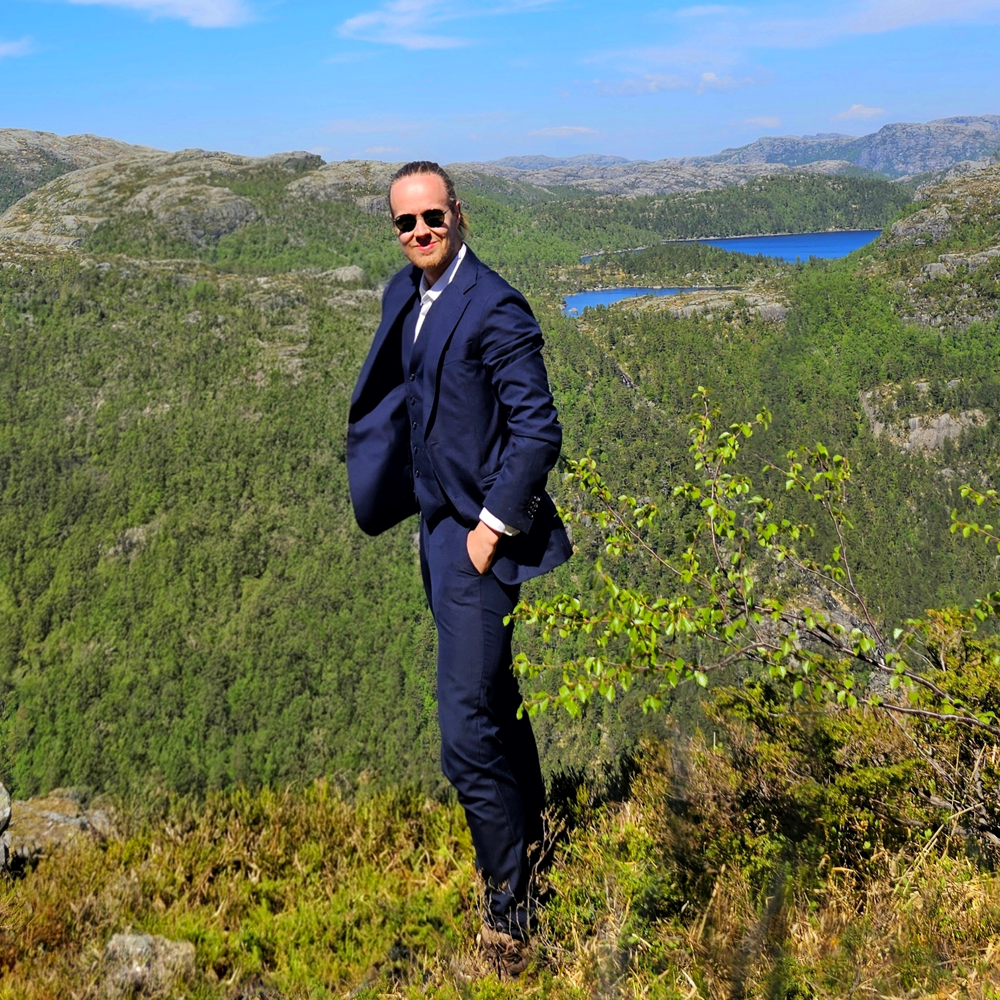

Teamet bak eldION


Joar Dale Landa
Sivilingeniør i industriell økonomi (UiS) med fagbrev som automatiker fra Norsk Hydro. Erfaring som automasjonsingeniør hos Siemens Energy.
Elsker: Rømme
Hater: Mørket

Christoffer Askeli Enoksen
Bachelorgrad i Automatisering og elektronikkdesign (UiS). Tar master i Industriell Økonomi, med grønn omstilling og ledelse. Erfaring som automatiker og automasjonsingeniør.
Elsker:
Hater: Rosiner

Vetle Gjerver
Sivilingeniør i kybernetikk (UiS) med fagbrev som automatiker fra Borregaard. Har erfaring som instrument- og meteringingeniør fra Aker Solutions.
Elsker: Bål
Hater: